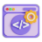

Daily.dev Streak
0
days
Loading status...
This extension automatically maintains your daily.dev streak by:
Clicking on an article when you visit daily.dev
Sending a reminder at 11:00 PM if needed
Automatically maintaining your streak at 11:15 PM if you haven't visited